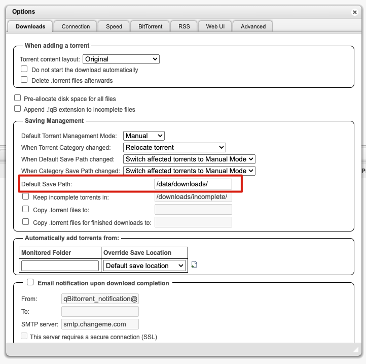
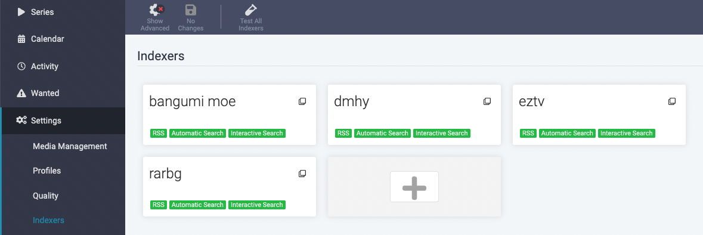
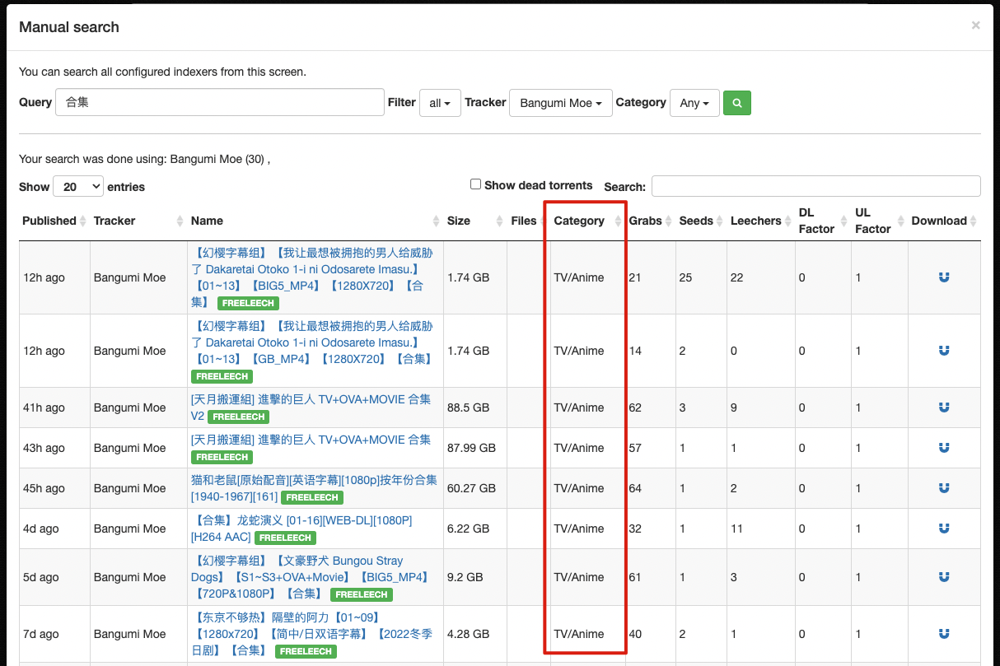
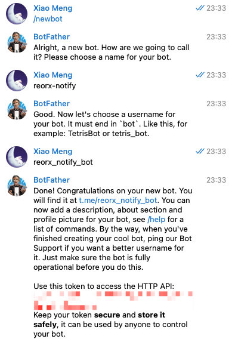
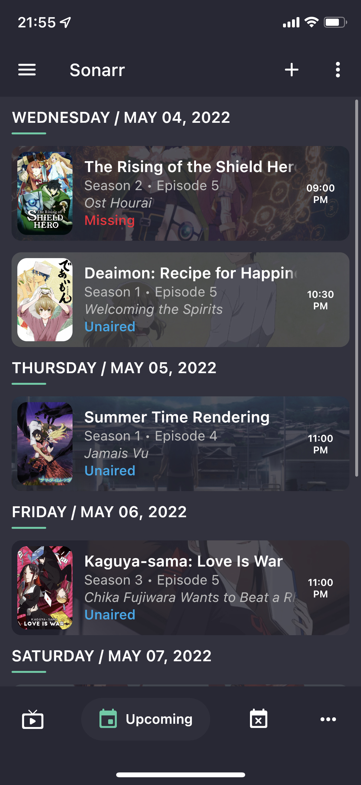
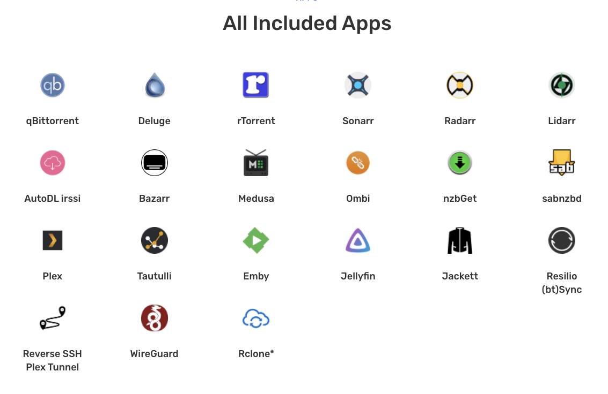

作为一个懒人，我很少折腾 self-hosted 服务，对于追番这种娱乐化的需求，更是有什么用什么将就度日。所以许多年来一直是用 Bilibili 观看新番，中途也尝试过 ebb.io 这类小众服务，但最后都因为连接不畅或数据滞后等原因放弃了。
去年为了实现 Home Assistant 家电自动化 (tweet)，我购买了一台 QNAP NAS，使家里有了 24 小时常驻的 Linux server 和 Docker host。年初由于 Bilibili 迟迟不上架《鬼滅之刃遊郭篇》，我又在 NAS 上安装了 Plex，将从 dmhy 手动下载的影片串流到电视上观看。最近又逢 4 月新番播出，想到家里的基础设施逐渐完备，便动起了搭建自动追番系统的心思。以下便是对这次尝试的记录和总结，希望能帮助有同样需求的人解决问题、节省时间。
使用 QNAP Download Station
本着尽量不增加新的系统来解决问题的思想，我首先研究了 QNAP 的下载器 Download Station，发现它自带 RSS 订阅功能，在进行一些手动配置后，即可完成自动追番和下载。
如果这一章节不感兴趣，你也可以直接跳到 使用 Sonarr 和它的朋友们。
1. 找到番剧的 RSS URL
Bangume Moe 是我经常使用的资源站，它提供基于 tag 的 RSS 搜索功能，可以非常精确地定位到番剧在特定字幕组、语言、分辨率瞎的视频发布链接。
- 首先在右上角的搜索框中输入想看的番剧名称，这里我使用「夏日重现」作为例子，可以看到下方自动匹配了
Summertime Render这个 tag。
- 点击这个 tag，搜索结果中会出现许多不同字幕组发布的资源，我们选择其中一个字幕组「喵萌奶茶屋」的资源，在 Torrent Details 中，可以看到其标注的 tags，有
喵萌奶茶屋,720p,chs-jpn等，妥善使用这些 tags 能够帮助我们缩小搜索结果范围
- 将
喵萌奶茶屋,chs-jpn添加到 Selected tags 中，现在我们一共有 3 个 tags，搜索结果缩短到了 2 条，已经非常清晰了，点击右上角的 RSS 图标即可得到用于订阅的链接。（美中不足的是，喵萌奶茶屋将 1080p 的资源错标为了720p，不过这点我们可以在后面的下载管理器中解决）
2. 将 RSS URL 添加到下载器
RSS 订阅是许多下载管理器的通用功能，如 Synology、qBittorrent 也都具有，使用方式与 Download Station 大同小异。
- 打开 RSS Download Manager，将上一步得到的订阅链接复制到 Feed URL 中。Label 填写番剧名称，两个 Location 根据自己 NAS 的目录结构选择。点击 Apply 添加。
- 添加完成后，打开 Filter Settings，它可以用于进一步过滤 RSS 返回的结果，避免下载不需要的资源。之前在进行资源搜索时，我们没能通过 tag 过滤掉 720p 的结果，在 Filter Settings 中，我们选择 1080p，这样 720p 就被忽略了。

- 回到主界面，刷新添加的 RSS，可以看到两条结果中只有 1080p 被加入到下载列表。Status 为 Finished 代表下载完成，New 代表新添加到 RSS，但不在下载列表中。
小结
Pros
- 无需配置和增加新系统
- 操作过程透明清晰，可控性强
Cons
- 步骤较为繁琐，需要在多个服务之间切换
- 下载的文件因为不符合 Plex 的格式需求，需要手动重命名才能在 Plex 上观看。但如果你使用 DLNA 这类基于文件系统定位视频的方式，倒是可以忽略这个缺点。
使用 Sonarr 和它的朋友们
Download Station RSS 虽然解决了基本的温饱问题，但与真正的自动化之间显然还有很大差距，如果你想充分利用 NAS 的功能，在家庭多媒体设施上更进一步，请继续向下阅读，走进 Sonarr 和它的朋友们的世界。
Sonarr
Sonarr is a PVR (Personal Video Recorder) for Usenet and BitTorrent users. It can monitor multiple RSS feeds for new episodes of your favorite shows and will grab, sort and rename them.
Sonarr 是一个 PVR 系统，它可以监控多种信息源的剧集发布信息，对剧集进行自动下载、刮削和重命名。
Sonarr 是 Sick Beard 的继任者，Sick Beard 基于 Python 开发，曾经是最著名的 PVR 系统，但后来逐渐式微，后续虽然有 Sick Gear 等 fork，但最终都没能满足人们日益增长的看片需求，最后被一群 C# 爱好者们开发出 Sonarr 给替代了。经过多年发展，Sonarr 的软件质量趋于成熟和稳定，成为构架自动化的家庭多媒体中心不可缺少的组件。
Sonarr 一开始就以多系统低耦合的方式进行设计，这大大降低了代码的复杂度，使其更易于维护，也为其繁盛的社区发展提供了基石。为了满足不同的用户需求，Sonarr 的作者们开发一系列以 rr 或其他双字母结尾的工具，以至于这种命名方式成为了 Sonarr 生态圈的一个标识和事实标准。
Jackett
Jackett works as a proxy server: it translates queries from apps into tracker-site-specific http queries, parses the html or json response, and then sends results back to the requesting software.
Jackett 是一个代理，用于将 Sonarr 等系统对剧集信息的查询请求转译成各种 torrent tracker/indexer （即资源发布站）所支持的请求。Jackett 的产生是 Sonarr 社区架构合理性的一个体现，它接管了适配不同 indexer 接口的脏活累活，使 Sonarr 可以专注在任务调度和剧集管理上。
Jackett 既然被用作资源查询的网关，实现缓存功能就顺理成章了，这样一方面可以应对 Sonarr 频繁的查询需求，另一方面也减少了 indexer 站点的负载量，实现了双赢。因此虽然它不是一个必须的组件，但我强烈建议每个使用 Sonarr 的用户都安装它。
FlareSolverr
FlareSolverr is a proxy server to bypass Cloudflare and DDoS-GUARD protection.
FlareSolverr 也是一个代理，它帮助 Jackett 解决向 indexer 的请求能否成功的问题。一些 indexer 为了保护自己免于 DDoS 攻击或减少爬虫请求，会使用 Cloudflare 或一些其他的安全防护服务，如果不做处理，直接请求很可能因触发人机验证而失败。FlareSolverr 就是为解决这类问题诞生的。
在 Jackett 中添加新的 indexer 时，会根据站点情况提示是否需要接入 FlareSolverr 以绕过站点的保护措施。
qBittorrent
大部分影视资源都使用 BT 协议进行点对点传输，因此我们也需要一个 BT 下载器，qBittorrent 就是一个很好的选择，它的功能非常全面，且与 Sonarr 有很好的接入支持。如果你已经运行了其他下载器如 Aria2，甚至 QNAP/Synology 自带的 Download Station，那么你也可以参考 Sonarr 支持的下载器列表，尝试进行配置。（我并没有成功使 Sonarr 和 QNAP Download Station 协同工作起来）
部署说明
各个组件介绍完毕，现在让我们进入正题，了解如何配置和部署整个 Sonarr 服务组。
Sonarr 现代化地提供 Docker 镜像的部署方式，因此这个章节将会围绕 Docker 相关的技术进行说明。虽然 Qnapclub 也有 Sonarr 的安装包，但经过一番糟心的尝试，最终我只得出一个结论，那就是以后部署任何服务，能 Docker 就尽量 Docker 吧。
A failed attempt to install Sonarr by qpkg
MediaInfo Library could not be loaded libmediainfo.so.0 assembly:<unknown assembly> type:<unknown type> member:(null)
我们的部署方案的基本原理是在自己的电脑上通过 Docker 和 Docker compose CLI 对远端 NAS 上的 Docker host 进行操作。这要求读者具备基础的 Docker 相关的知识。
QNAP/Synology 等 NAS 系统提供的 Docker host 与标准实现基本没有差异，因此我们可以直接使用 Docker 官方软件包提供的命令行工具。你也可以使用 NAS 提供的图形化界面，但一则那样在部署多个服务时非常不便，二则如果你了解了如何使用 Docker compose 部署，自然也可以反推到图形化界面的操作方式上。
Docker context
为了与本地的 Docker host 区分开，我们要为 NAS 上的 Docker host 创建一个新的 context。
harrogath是我的 NAS 的 hostname，可以使用 IP 代替
|
|
QNAP 的 Docker 需要通过证书来访问，因此要在 Container Station 的设置中下载证书。

完成 context 创建后，通过 use 命令切换到 context，之后所有的 Docker 命令都是与 NAS Docker 进行通讯
|
|
Images
目前主要有两个组织在维护 Sonarr 及相关服务的 Docker 镜像，linuxserver.io 和 hotio.dev, 我选择前者作为本次部署的镜像源。下面是使用到的镜像列表，可以在其页面上查看镜像的使用说明。
- linuxserver/sonarr - Docker Image | Docker Hub
- linuxserver/jackett - Docker Image | Docker Hub
- linuxserver/qbittorrent - Docker Image | Docker Hub
- flaresolverr/flaresolverr - Docker Image | Docker Hub
Hierarchy
Sonarr 和它的朋友们需要对 NAS 的存储进行读写，因此在运行服务之前，首先要理解并设计一个好用的目录结构。
我们需要在 NAS 上创建一个 AppData 目录，作为容纳所有服务产生的文件的根目录。AppData 所在的 Volume 建议选择适合存放大量媒体数据的精简卷 (Thin Volume)。
AppData
├── jackett
│ ├── config
│ └── downloads
├── qbittorrent
│ └── config
└── sonarr
├── config
├── downloads
├── media
├── torrents
└── usenet
在 AppData 之下，依次为 sonarr, jackett, qbittorrent 创建目录，每个目录下必须有 config 子目录，用于存放配置文件。flaresolverr 由于是纯网络代理服务不需要对应目录存在。
下面对各个服务的 NAS 目录与容器内目录的映射关系进行说明
表示为
NAS Directory -> Container Directory
- sonarr
sonarr/config -> /config: 配置文件sonarr -> /data: 数据文件，可在 Sonarr 管理界面向下创建子目录
- qbittorrent
qbittorrent/config -> /config: 配置文件sonarr -> /data: 数据文件，与 sonarr 保持一致，以便 sonarr 在重命名或移动文件时可以直接使用 qbittorrent 返回的文件路径
- jackett
jackett/config -> /config: 配置文件jackett/downloads -> /downloads: 默认种子文件下载路径
Compose file
以我正在使用的 docker-compose.yml 文件作为示例，你可以复制下来修改自己的版本，只需要将 /share/CACHEDEV2_DATA/Misc/AppData 替换为自己在 NAS 上创建的 AppData 路径即可。
端口的配置需要额外注意，这份配置中我尽量保持各服务默认配置端口不变，若与已有服务冲突，修改到未被占用的端口即可。例如 QNAP 自带的 Download Station 已占用 6881 端口，因此我将 qbittorrent 修改到了 16881 端口。
|
|
Run
一切准备就绪，执行以下命令:
docker compose up
这会启动所有服务并 attach 到终端输出日志，方便查看服务的运行日志。等确认所有服务稳定运行后，加上 -d 参数使其运行在后台。
docker compose up -d
使用说明
下面对各个服务的 Web UI 的使用方法进行说明，以我的 NAS hostname harrogath 为例展示服务的访问地址。
Jackett
打开 http://harrogath:9117, Jackett 的界面展示如下:

使用方式非常简单，Jackett 已经将这个世界上绝大部分 indexer 都内置了，只需要点击 Add indexer 搜索并添加即可。除了部分有访问限制的 indexer 需要配置外，基本上都可以一路点击确认完成添加。之后在 Sonarr 中对接时，需要复制订阅 URL 和 API key，参照截图中所示即可。
我目前使用了 4 个 indexer，其中 Bangumi Moe 和 dmhy 用于下载动画番剧，EZTV 和 RARBG 用于下载美剧。
为了使 FlareSolverr 发挥作用，我们还需要将它的 URL 填在最下方的配置中，然后点击 Apply server settings 保存生效。

qBittorrent
打开 http://harrogath:8080，使用默认用户名密码 admin:adminadmin 登录。
打开 Tools » Options，将 Default Save Path 修改为 /data/downloads。这样做的目的是为了使 qBittorrnet 所记录的文件路径与 Sonarr 保持一致，以便不需要额外配置就能使 Sonarr 的重命名功能正常工作。若你不希望修改下载路径，或使用的是其他下载器，可以参考 Remote Path Mappings 来解决路径不一致的问题。

在 Options 中切换到 BitTorrent 选项卡，将 Seeding Limits 下的 “then” 修改为 “Pause torrent”，这是为了避免 Sonarr 在删除种子时产生冲突。“When ratio reaches” 代表做种分享资源的比率。BT 协议提倡共享精神，既然从别人那里获取到自己想要的资源，理应做出回馈。如果你担心硬盘过度损耗，可以将比率降低。(也可以修改为 0 关闭做种功能，如果克服了道德感的约束)

Sonarr
终于到了追番大计最核心的组件——Sonarr，但先不要急，在添加番剧前，还有一些设置要做。
- Indexers
- 将先前在 Jackett 中添加的 indexers 逐个对接到 Sonarr，使用 Torznab 协议。 
- Bangumi.moe 的配置展示，URL 和 API Key 都是从 Jackett 中复制过来。需要注意的是， Categories 是影视剧的分类，应该留空，而在 Anime Categories 中勾选所有与番剧相关的分类项。
- 若不确定自己要搜索在资源属于哪个分类项，可在 Jackett 中使用 Manual Search 来确认 
- rarbg 的配置展示，由于 rarbg 是影视剧 indexer，我们需要在 Categories 中勾选分类项而将 Anime Categories 留空
- Download Clients
- qBittorrent 配置展示。Host 最好填写 IP，使用 hostname 可能会失败。
- Media Management
这个设置关系到下载的文件能否被 Plex 或其他 media server 识别，但别被眼花缭乱的设置项吓到， 我们只需要关心下图红框圈起的部分。

- 首先打开 Rename Episodes 功能
- 然后配置 Anime Episode Format 和 Season Folder Format，这代表番剧被重命名后的文件名格式和上级目录格式。你不用关心源文件的名称如何被 Sonarr 解析，你只用知道它自信并出色地完成了这项脏活，让我们可以使用变量定义想要的文件和目录名称。这里我使用的是 Plex 的 TV Show Files 格式，实现的结果如下:

- 最后配置 Root Folders，它们在添加番剧的时候会用到，作为放置番剧的目录。你可以根据自己的需求设置多个，一般来说设置两个将影视剧和动画番剧分开存放即可。还记得我们在
docker-compose.yaml中配置的目录映射吗？这里的目录/data/media/anime tv在 NAS 中对应的是AppData/sonarr/data/media/anime tv，在 Plex 添加媒体库时不要忘了如何找到它。
- Profiles
默认只有 English，需要添加一个中文的 Profile 以在添加番剧时设定语言。

- Connect
实现自动化追剧的目的是为了不需要人工检查剧集的更新情况，因此通知是必不可少的。Connect 可以连接许多通知服务，让你第一时间知道剧集何时上线，资源何时发布，何时完成下载、可以观看。下面说明如何对接 Telegram 获取通知信息。
-
在 Telegram 搜索机器人
@BotFather，按照提示创建一个新的机器人，获取 API Token。我的机器人名为@reorx_notify_bot。  -
创建一个群组，将 bot 加入到群组中，请求接口
https://api.telegram.org/bot<TOKEN>/getUpdates, 取出返回结果中的result[0].channel_post.chat.id作为 chat id -
在 Sonarr 中添加 Telegram connection，勾选自己关心的通知类型，一般至少会选择 On Download，代表新剧集下载完成的时间。
-
配置好后，就可以通过 Telegram 第一时间掌握番剧的更新情况了。

-
开始追剧
配置完成，现在可以开始追剧了。下面以「盾之勇者成名录 第二季」为例说明在 Sonarr 添加番剧的过程。
打开 TheTVDB.com, 搜索到你想要追踪的番剧的页面 The Rising of the Shield Hero，获取 URL 中的最后一段 the-rising-of-the-shield-hero 作为在 Sonarr 搜索关键词。
打开 Sonarr，在左上角的 Search 框中输入 the-rising-of-the-shield-hero，点击搜索结果，进入添加番剧的界面。
- Root Folder: 选择先前在 Media Management 中设置的
anime tv - Monitor: 由于我们只想看最近的第二季，因此选择 Only Latest Season
- Quality Profile: 选择 HD-1080p 或其他你需要的格式/分辨率
- Language Profile: 选择 Chinese
- Series Type: 选择 Anime，这里对应的是添加 Indexer 时的 Anime Categories 选项，告诉 Sonarr 从 Indexer 的 Anime Categories 中搜索资源。如果使用默认的 Standard（对应 Indexer 的 Categories），将会导致无法搜索到资源。
- Season Folder: 勾选，为了对应 Plex 要求的目录结构
- Start search for missing episodes: 勾选，这会使 Sonarr 在添加番剧后立刻根据 Monitor 所设置的条件开始搜索资源。也可以在添加完成后在详情页手动点击触发。
完成添加后，点击番剧进入详情页。

- 点击放大镜图标对其所在的 Season 进行剧集搜索。
- Status 列的图标说明
- 🕓: 尚未播出，不会进行监控
- ⚠️: 已播出，硬盘中还没有资源，正在进行监控
- ☁️ 或进度条: 已开始下载
- 书签符号有填充代表该季处于正在监控状态，无填充代表未监控，可以点击手动设置为监控
在 Sonarr 首页可以看到各个番剧的追踪状态，蓝色代表标记追踪的剧集都已下载完成，红色代表有缺失，正在持续监控中。

下载了一些资源后，我们打开 Plex，将 anime tv 对应的路径添加到「动画」Library 中，Plex 就会开始自动扫描文件、刮削元数据、下载中文字幕了。
大功告成，在 Plex 上愉快看番吧☺️。

番外
Sonarr 的其他朋友们
- Radarr Radarr 是 Sonarr 的兄弟项目，Sonarr 专精于追剧，Radarr 专精于追踪电影
- Bazarr Bazarr 用于自动下载字幕文件，由于 Plex 本身具有这个功能，以及大部分动漫资源都有内置字幕，因此不是特别有必要部署
- Lidarr Lidarr 是音乐专辑的追踪和下载器，适用于喜欢收藏本地音乐文件的用户
- Readarr Readarr 是电子书的追踪和下载器。我看书不多，偶尔需要看的书一般从 zlibrary 下载，Calibre 足够满足我的管理需求。
LunaSea
LunaSea 是一个 Sonarr 和 Usenet 生态圈的远程控制器，能让你在手机上查看 Sonarr / Radarr / Lidarr 的资源和放送时间表。

Seedbox.io
在得知我最近的折腾后，我的好朋友 wzyboy 向我推荐了 seedbox.io, 它是一个专业的 BT 资源下载和家庭媒体服务器提供商。如果你不想自己花费功夫搭建这套设施，并且可以顺畅地访问位于荷兰的服务器，可以考虑购买 seedbox 的服务器，获得开箱即用的全套服务。

结语
Sonarr 和它的朋友们还有许多功能，本篇旨在引导用户完成最基本的自动化追番配置，就不一一介绍了，有兴趣的读者可以自行探索，欢迎在评论区留言分享。
近两年来，在家办公越来越融入到我们的生活，家庭网络和服务的搭建也逐渐从以往对 Geek 的刻板印象，变成或许没被意识到，但人人都有的需求。照片存储、数据备份、远程控制、环境监控、智能家居、多媒体娱乐…这些无一不是我们的日常所需。往后我会写更多这方面的文章，将我使用 NAS 改变生活方式的过程记录下来。The digital life has just begun.
References
Revision
- 2022-04-19: created with “使用 QNAP Download Station”
- 2022-05-02: added “使用 Sonarr 和它的朋友们”, finished “部署说明”
- 2022-05-04: finished “使用说明” and the whole article